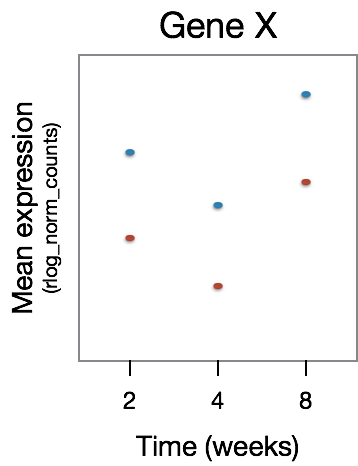
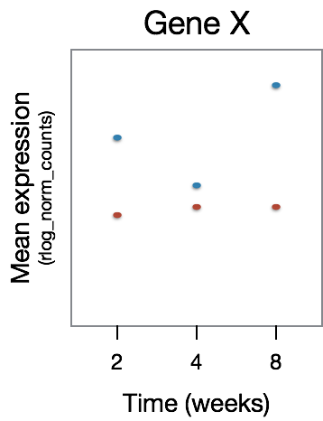

## DO NOT RUN THIS CODE
full_model <- ~ genotype + treatment + time + treatment:timeTime course analysis with DESeq2
Approximate time: 20 minutes
Learning Objectives
- Discuss time course analyses with DESeq2
Time course analyses with LRT
Despite the popularity of static measurement of gene expression, time-course capturing of biological processes is essential to reflect their dynamic nature, particularly when patterns are complex and are not simply ascending or descending. When working with this type of data, the Likelihood Ratio Test (LRT) is especially helpful. We can use the LRT to explore whether there are any significant differences across a series of timepoints and further evaluate differences observed between sample classes.
For example, suppose we have an experiment looking at the effect of treatment over time on mice of two different genotypes. We could use a design formula for our ‘full model’ that would include the major sources of variation in our data: genotype, treatment, time, and our main condition of interest, which is the difference in the effect of treatment over time (treatment:time).
Warning
This is just example code for our hypothetical experiment. You should not run this code.
To perform the LRT test, we also need to provide a reduced model, that is the full model without the treatment:time term:
## DO NOT RUN THIS CODE
reduced_model <- ~ genotype + treatment + timeThen, we could run the LRT by using the following code:
## DO NOT RUN THIS CODE
dds <- DESeqDataSetFromMatrix(countData = raw_counts,
colData = metadata,
design = ~ genotype + treatment + time + treatment:time)
dds_lrt_time <- DESeq(dds, test="LRT", reduced = ~ genotype + treatment + time)To understand what kind of gene expression patterns will be identified as differentially expressed, we have a few examples below. In the plots below we have time on the x-axis and gene expression on the y-axis. In this dataset there are two samples for each time point, one having undergone some treatment (red) and the other without (blue).
For this figure, we are depicting the type of genes that will not be identified as differentially expressed. Here, we observe that GeneX is differentially expressed between the time points, however there is no difference in that expression pattern between the treatment groups.

The type of gene expression patterns we do expect the LRT to return are those that exhibit differences in the effect of treatment over time. In the example below, GeneX displays a different expression pattern over time for the two treatment groups.

Continuing with our example dataset, after running the LRT we can determine the set of significant genes using a threshold of padj < 0.05. The next step would be to sort those genes into groups based on shared expression patterns, and we could do this using degPatterns(). Here, you will notice that we make use of the col argument since we have two groups that we are comparing to one another.
## DO NOT RUN THIS CODE
clusters <- degPatterns(cluster_rlog, metadata = meta, time = "time", col = "treatment")Depending on what type of shared expression profiles exist in your data, you can then extract the groups of genes associated with the patterns of interest and move on to functional analysis for each of the gene groups of interest.
Materials and hands-on activities were adapted from RNA-seq workflow on the Bioconductor website